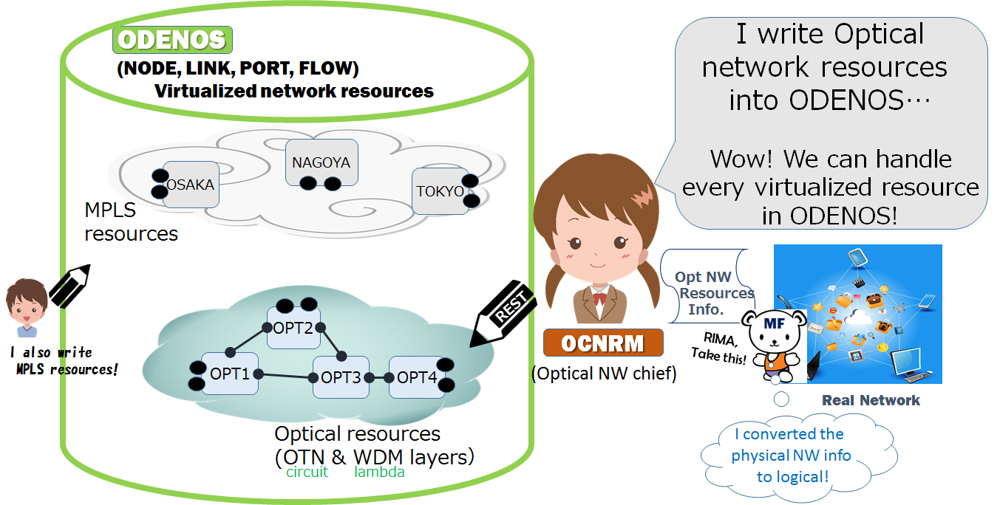
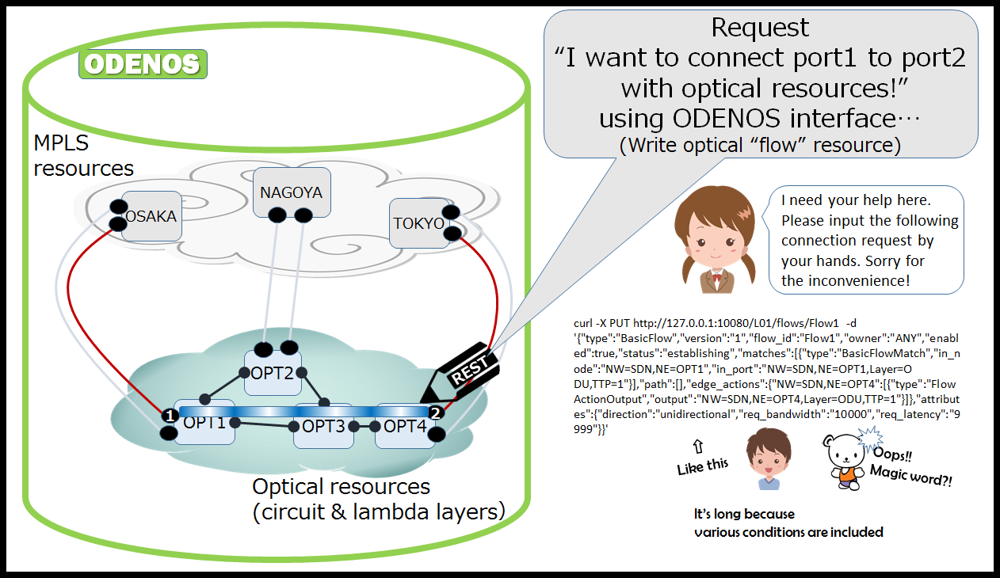
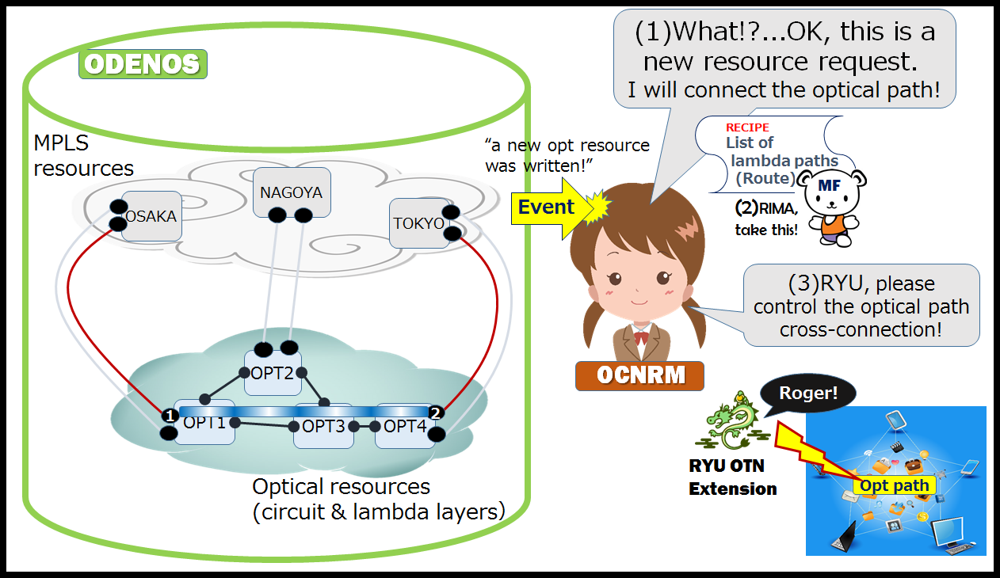
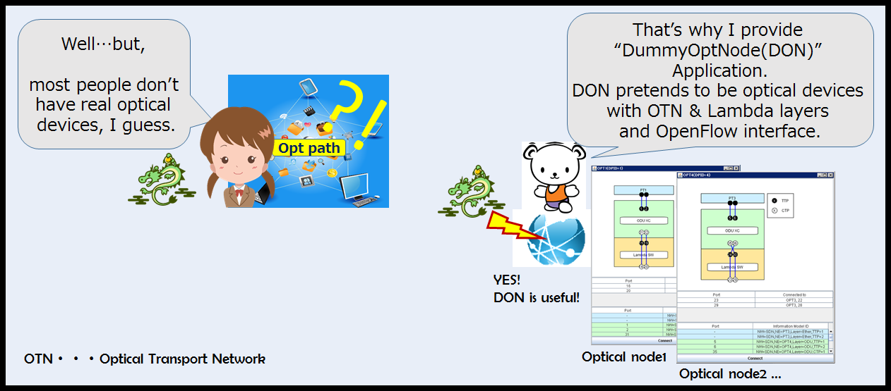
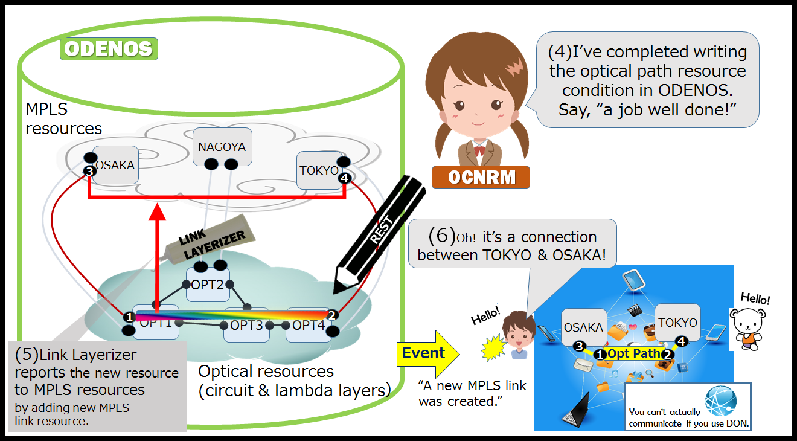

Optical core network SDN[OSS]outline - basics -
What can we do with Optical SDN OSS?
(1)Virtualize optical core network resources.
Everyone can handle virtualized resources via ODENOS.
Download the OSS here.
Detailed OPT SDN OSS information is here.

- - Since SDN controls the network using logical resource info, logical resource info needs to be first written in ODENOS.
- - Our OSS applications do this automatically using the sample configuration.
(2)Multi-layer resources handling.
(3)On-demand connection with optical path.




You can get more detailed OPT SDN OSS information here.
Back to cooperation(2): Make optical path(s)
Optical core network SDN[OSS]outline - cooperation with another application -
(4)Multi-layer coordinated control. [cooperation with Packet-transport OSS]
Note: In this web page, we describe the packet-transport network as an MPLS network.
- cooperation(1): Write the desired resource into ODENOS as a resource request.
- cooperation(2): Make optical path(s).
Go to [How to make an "Optical path"!?]
- cooperation(3): Use the optical path(s).
SPECIAL THANKS TO Dr.Xi Wang and Mr.Kubota